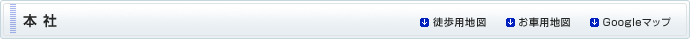
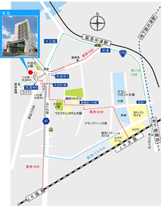
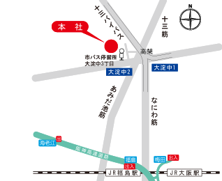

〒531-0077大阪市北区大淀北1丁目6-110TEL 06-6458-7301 FAX 06-6458-7303
【徒 歩】 ■JR大阪駅から（20分） 中央出口北側からグランフロント大阪（南館）西側を通って信号を左折し、西へ直進します。新梅田シティ前の信号を渡ったのちスカイビルを抜け、大淀中公園の北側を通り、なにわ筋を横断します（大淀中南１交差点）。あみだ池筋に出たら大淀中２交差点を北西へ二段階で横断し、大淀中３バス停右側の道を入ってすぐ。 ■JR福島駅から（18分） なにわ筋を北へ約１ｋｍ進み、大淀中１バス停を左折してあみだ池筋まで出ます。 大淀中２交差点を北西へ二段階で横断し、大淀中３バス停右側の道を入ってすぐ。 ■阪急中津駅から（10分） 改札口を出て右の階段を上がり、出てすぐの信号を渡って直進、下り坂を野田阪神方面へ約500ｍ進みます。大淀中１交差点（高架下信号）をそのまま直進して大淀中３バス停の手前を右折してすぐ。 【バ ス】 ■大阪駅から（10分） ○大阪シティバス のりば 時刻表（Osaka Metro HPより） JR高架下11番のりば（JR大阪駅と阪急百貨店の間）で５８系統の「野田阪神前行き」に乗り、４つ目のバス停[大淀中３]で下車します。 道路向かいのバス停[大淀中３]右側の道を入ってすぐ。

【車】 ■名神高速（京都・神戸）方面から 豊中ＩＣから阪神高速池田線大阪市内方面で福島出口を左折。 200ｍ走行し福島７北交差点を左折して800ｍ走行。 大淀中2交差点を越えてすぐの道を左折（十三バイパスにのらないよう注意してください。） ■神戸方面から 阪神高速神戸線海老江出口を左折し800ｍ走行。 海老江交差点を左折して1200ｍ走行、大淀中２交差点手前の道を左折。 ■奈良・和歌山方面から 阪神高速梅田出口を左折、650ｍ走行して福島７北交差点を右折。 800ｍ走行し大淀中2交差点を越えてすぐの道を左折（十三バイパスにのらないよう注意してください。）
詳細の広域を見たい方はGoogleマップをご利用ください。